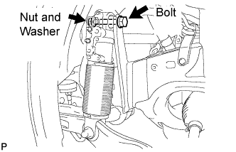
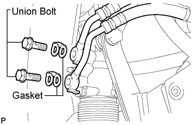
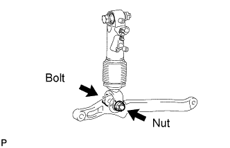
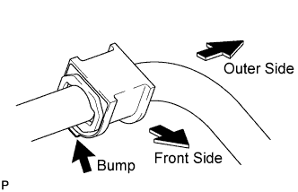
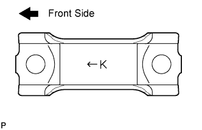
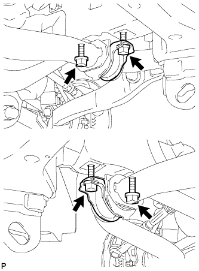
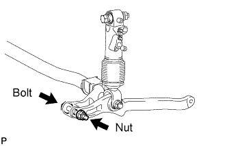
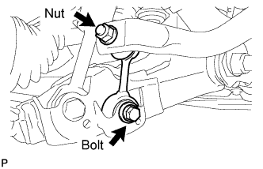

FRONT STABILIZER BAR (w/ KDSS) > INSTALLATION |
| 1. INSTALL FRONT NO. 1 SUSPENSION CONTROL BLEEDER PLUG |
 |
Install the 2 suspension control bleeder plugs to the front stabilizer control cylinder.
| 2. INSTALL FRONT STABILIZER CONTROL CYLINDER |
 |
Install the front stabilizer control cylinder to the frame with the bolt, washer and nut.
| 3. CONNECT FRONT NO. 1 STABILIZER CONTROL TUBE ASSEMBLY |
 |
Install 2 new gaskets and the front stabilizer control cylinder to the front stabilizer control cylinder with the 2 union bolts.
| 4. INSTALL EXHAUST CENTER PIPE ASSEMBLY |
for 2UZ-FE:
Install the center exhaust pipe (Click here).
for 1VD-FTV:
Install the center exhaust pipe (Click here ).
| 5. INSTALL TAILPIPE ASSEMBLY |
for 2UZ-FE:
Install the tailpipe (Click here).
for 1VD-FTV:
Install the tailpipe (Click here).
| 6. INSTALL STABILIZER CONTROL TUBE PROTECTOR |
Install the tube protector with the 2 bolts.
| 7. TEMPORARILY INSTALL FRONT STABILIZER CONTROL ARM ASSEMBLY |
 |
Temporarily install the stabilizer control arm to the front stabilizer control cylinder with the nut and bolt.
| 8. BLEED AIR FROM SUSPENSION FLUID |
Bleed the air from the suspension fluid (Click here).
| 9. INSTALL FRONT NO. 1 STABILIZER BAR BUSH |
 |
Install the 2 bushes to the outer side of the bush stoppers on the front stabilizer bar as shown in the illustration.
| 10. TEMPORARILY INSTALL FRONT STABILIZER BAR |
 |
Set the stabilizer bracket so that the arrow mark is facing the front side of the vehicle.
 |
Temporarily install the 2 stabilizer brackets and front stabilizer bar with the 4 bolts.
 |
Temporarily install the front stabilizer bar to the stabilizer control arm with the bolt and nut.
| 11. TEMPORARILY INSTALL FRONT STABILIZER LINK ASSEMBLY RH |
 |
Temporarily install the stabilizer link with the bolt.
Temporarily install the stabilizer link with the nut.
Tighten the nut.
| 12. TEMPORARILY INSTALL FRONT STABILIZER LINK ASSEMBLY LH |
 |
Temporarily install the stabilizer link to the lower arm with the bolt.
 |
Temporarily install the stabilizer link to the stabilizer control arm with the bolt and nut.
| 13. TIGHTEN FRONT NO. 1 STABILIZER BRACKET LH |
 |
Tighten the 2 bolts of the front stabilizer brackets.
| 14. TIGHTEN FRONT NO. 1 STABILIZER BRACKET RH |
 |
Tighten the 2 bolts of the front stabilizer brackets.
| 15. INSTALL NO. 1 ENGINE UNDER COVER SUB-ASSEMBLY |
 |
Install the No. 1 engine under cover with the 10 bolts.
| 16. INSTALL FRONT FENDER SPLASH SHIELD SUB-ASSEMBLY LH |
 |
Push in the clip indicated by the arrow in the illustration to install the fender splash shield.
Install the 3 bolts and screw.
| 17. INSTALL FRONT FENDER SPLASH SHIELD SUB-ASSEMBLY RH |
| 18. STABILIZE SUSPENSION |
Install the front wheels.
Lower the vehicle.
Press down on the vehicle several times to stabilize the suspension.
| 19. TIGHTEN FRONT STABILIZER LINK ASSEMBLY LH |
 |
Tighten the bolt.
Tighten the nut.
| 20. TIGHTEN FRONT STABILIZER LINK ASSEMBLY RH |
 |
Tighten the bolt.
| 21. TIGHTEN FRONT STABILIZER CONTROL ARM ASSEMBLY |
 |
Tighten the nut.
| 22. TIGHTEN FRONT STABILIZER BAR |
 |
Tighten the nut.
| 23. INSTALL FRONT FENDER APRON SEAL REAR LH |
 |
Install the apron seal with the 4 clips.
| 24. INSTALL FRONT FENDER APRON SEAL LH |
 |
Install the apron seal with the 3 clips.
| 25. INSPECT FOR SUSPENSION FLUID LEAK |
Check that the union nuts shown in the illustration are tightened to the specified torque.
Check for fluid leakage from the parts and connections.

| 26. MEASURE VEHICLE HEIGHT |
Set the tire pressure to the specified value(s) (Click here).
Bounce the vehicle to stabilize the suspension.
 |
Measure the distance from the ground to the top of the bumper and calculate the difference in the vehicle height between left and right. Perform this procedure for both the front and rear wheels.
| 27. CLOSE STABILIZER CONTROL WITH ACCUMULATOR HOUSING SHUTTER VALVE |
Using a 5 mm hexagon socket wrench, tighten the lower and upper chamber shutter valves of the stabilizer control with accumulator housing.
| 28. INSTALL STABILIZER CONTROL VALVE PROTECTOR |
 |
Install the valve protector with the 3 bolts.
Attach the clamp, and connect the connector to the valve protector.
| 29. INSPECT FOR EXHAUST GAS LEAK |